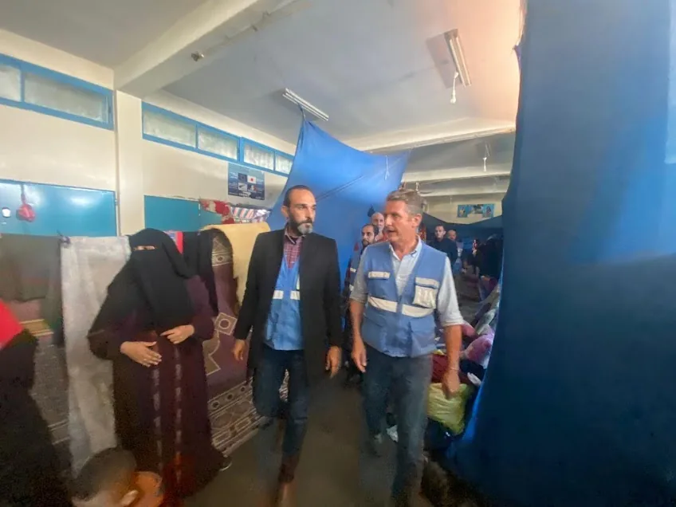

October 2023 – January 2024
Shelter Center Leadership
View shelter evidence
Leading emergency shelter operations under severe crisis conditions
As Shelter Center Leader and Emergency Shelter Coordinator, I organized spaces, coordinated staff and volunteers, communicated urgent needs to senior leadership, supported psychosocial activities, and helped preserve dignity and order for displaced families.
3,643Displaced people
668Families hosted
1,427Children and youth
53Staff and volunteers
20+Field visits and meetings
1–2Structured daily activities